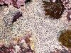

| Página de procedencia: | Algas_rojas.htm | |
|
| Contenido de esta página: | Características del orden | ||
| Cuadro Resumen | |||
| Más datos: catálogo y claves, familia: | #Coralináceas |
||
| Para las referencias véase | Algas_bibliografia.html | ||
| Para los términos véase: | Algas_Introduccion.htm |
| Géneros |
Especies |
Talos |
Imágenes |
|---|---|---|---|
| Corallina |
Arbolillo articulado pinnado Epífita
|
||
| C. elongata |
Epilítica;
artejos apicales muy comprimidos |
 |
|
| C. officinalis |
Epiítica;
artejos casi cilíndricos |
||
| Amphiroa |
A. beauvoisii |
Arbolillo articulado dicotómico Ramificación no siempre concordante
con los artejos
Artejos superiores planos
|
|
| A. rigida |
Artejos superiores
cilíndricos |
||
| Jania |
Ídem Ramificación concordante con los
artejos
Artejos 2-4 veces más largos que
anchos, los
basales de hasta 1/3 de mm de diámetro
|
 |
|
| J. rubens |
Artejos 3-6
veces más largos que anchos, los basales de hasta 1/2 mm de
diámetro |
||
| Titanoderma |
T. pustulatum |
Incrustante epífita Placas opacas sobre diversas algas rojas.
Conceptáculos sobresaliendo claramente del talo
|
 |
| T. corallinae |
Placas opacas sobre Corallina.
Conceptáculos no sobresaliendo apenas del talo |
||
| Melobesia |
Ídem Placas translúcidas, de color rojo
violeta
|
||
| Fosliella |
F. farinosa |
Ídem Placas casi transparentes, de color rosa
pálido
|
|
| Lithophyllum |
L. expansum |
Incrustante epilítica Placas horizontales que se desprenden con
facilidad
|
|
| L. incrustans |
Placas
horizontales fuertemende adheridas |
 |
|
| L. lichenoides |
Placas erectas
anastomosándose y formando una especie de panal creciendo en
forma de cresta |
 |
|
| Spongites |
S. dentata |
Ídem
Placas más o menos erectas en todas direcciones |
|
| S. notarisii |
Placas que recubren los tubos del
molusco colonial Dendropoma petraeum |
 |
|
| Mesophyllum |
M. lichenoides |
Ídem
Placas erectas superponiendose y formando masas de 5-20 cm de aspecto
cerebriforme, en forma de flor o de col |
|
| 1. |
Artejos superiores planos |
A. beauvoisii |
| 1. |
Artejos cilíndricos |
A. rigida |
| 1. |
Talo epífito (sobre
otras algas) |
|
| 1. |
Talo epilítico (sobre
roca) |
|
| 2. |
Artejos muy comprimidos, sobre todo hacia los
ápices, los de los ejes principales de menos de 1 mm como
promedio. Ramificación muy densa |
C. elongata |
| 2. |
Artejos casi cilíndricos, los de los ejes
principales de más de 1 mm como promedio. Ramificación
laxa. |
| 1. |
Artejos basales con dos
prolongaciones laterales en su extremo superior |
|
| 1. |
Artejos sin prolongacioles
laterales apicales |
2 |
| 2. |
Artejos de 2 a 4 veces tan largos como anchos;
talo de hasta 10 cm, gris violáceo, con una costra de
fijación bien desarrollada |
|
| 2. |
Artejos de 3 a 6 veces tan largos como anchos;
talo de 2-3 cm, rosa violáceo, con un pequeño disco basal
de fijación |
J. rubens |
| 1. |
Talo formando placas
más o menos erectas, anastomosándose unas con otras
formando una especie de panal |
|
| 1. |
Talo formando placas
horizontales |
2 |
| 2. |
Placas fuertemente adheridas al substrato |
L.
incrustans |
| 2. |
Placas que pueden desprenderse con facilidad |
L. expansum |